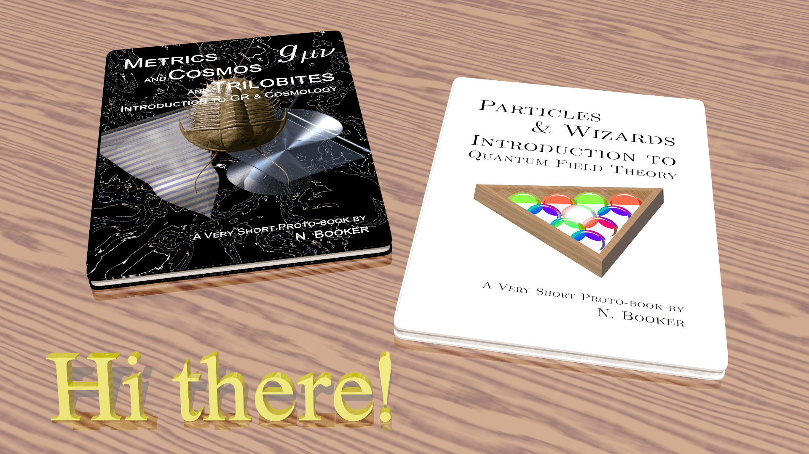

Welcome to N. Booker's website
I am a recent master's graduate in theoretical physics at University College London.
Master's thesis
My master's thesis is titled 'Weak field approximations in modified theories of gravity' and concerns gravitational waves in modified gravity.
Currently, I am doing extended work on this thesis regarding cosmological GW solutions in \(f(\mathbb{Q})\) gravity.
Formal lecture notes
My formal lecture notess on various topics in physics can be viewed below. They will be updated as more chapters are written.
Introduction to General Relativity & Cosmology (in preparation, authored jointly with F. Silva)
- Contents: Manifolds - Tensors - Classical mechanics - Special relativity - Curvature - Field equations and gravitational waves - Schwarzschild solution - More geometry - Tetrads - ADM formalism - Cosmology before GR - FLRW model - Friedmann equations and exact solutions - Problems with the FLRW model - Inflation - Emergence of cosmological perturbation theoryManifolds - Tensors - Classical mechanics - Special relativity - Curvature - Field equations and gravitational waves - Schwarzschild solution - Tetrads - ADM formalism - Cosmology before GR - FLRW model - Friedmann equations and exact solutions - Problems with the FLRW model - Inflation - Emergence of cosmological perturbation theory
Introduction to Quantum Field Theory
- Contents: Preliminaries (Classical field theory - Non-relativistic quantum mechanics) - Canonical quantisation (Free fields - Interacting fields I: \(\phi^4\) theory - Interacting fields II: QED) - Path integrals (Free fields - Interacting fields I: \(\phi^4\) theory - Interacting fields II: QED) - Renormalisation and regularisation (Regularisation - Renormalisation I: \(\phi^4\) theory - Renormalisation II: QED) - Standard model (Non-Abelian gauge theories - Electroweak theory - Experimental high energy physics)
Introduction to Spinors & Symmetries (in preparation)
- Contents: Preliminaries - Naive Lie theory - \(\mathrm{SU}(n)\) and \(\mathrm{SO}(n)\) groups - Young diagrams - Root systems - Grassmann mathematics - Spinors